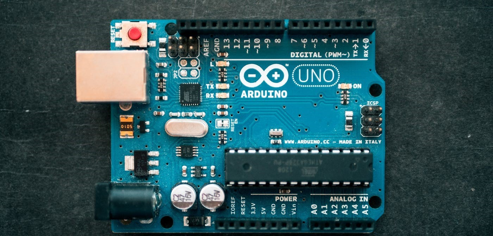
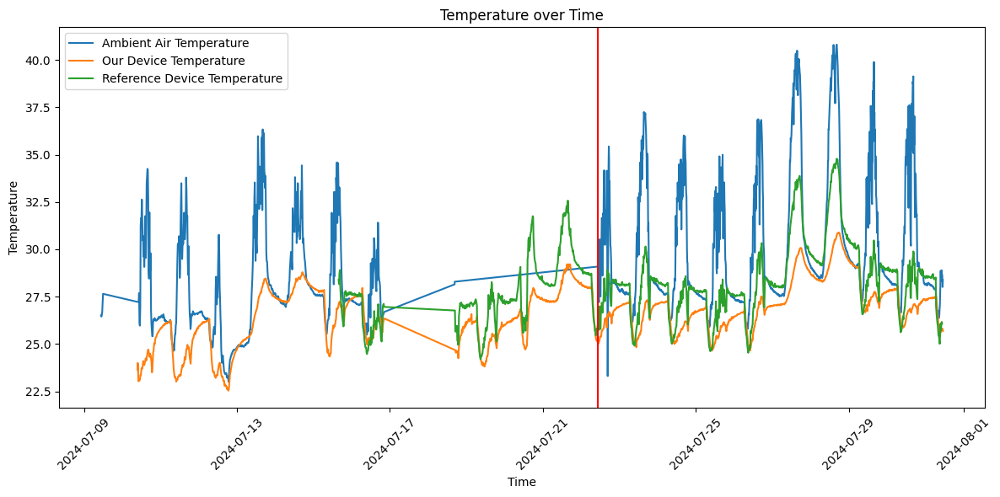
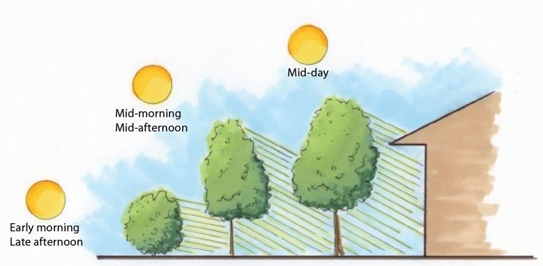
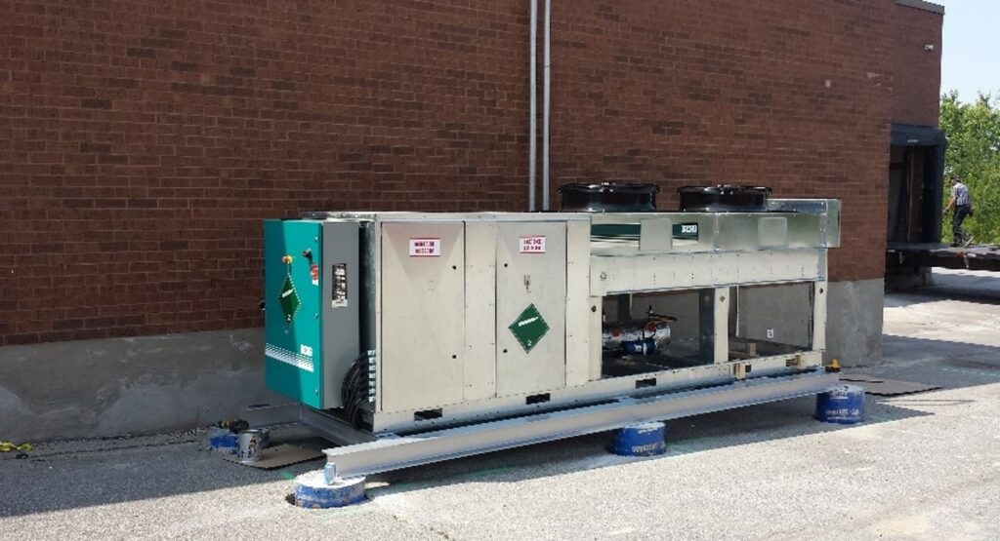

Data Engineering Project with Arduino
Project Overview
Maintaining the optimal enviornmental conditions on a factory shop floor is critical for the comfort and productivity of workers, along with their safety. So how can we improve these enviornmental conditions?
This group project aims to improve worker safety and comfort on a facory shop floor by monitoring and analysing environmental conditions. Our goal is to identify areas where temperature, humidity, and air quality was unsuitable for workers, and to provide sustainable and energy-efficient recommendations for improvement.
Data Collection
To facilitate Data Collection, we hooked an Arduino Uno up with a temperature and humidity sensor, and an air quality sensor. We then placed the Arduino at the factory shop floor, and connected it to a database via an MQTT broker. Our group's sensor was placed at the room's south-east.

Additionally, extra data was obtained from the "device01" sensor, which was a sensor placed at the room's shutter door by our lecturer. Furthermore, we also exchanged data with another group, whose sensor was located at the north-west of the room.
With 3 datasets, we were now ready to move on to Data Preparation.
Data Preparation
Aside from performing the standard Data Cleaning steos, such as by removing null values, we had to confront a major issue:
There was a outage in the database that stored our readings, which was not restored for 2 days. This significantly complicated things, as it caused the graphs we plotted to be less readable and intuitive. Hence, we only decided to use data collected from after the outage was resolved (Right of the red line).
Data Exploration & Analysis
From here, my group created more graphs to better visualise and explore the latent trends and patterns of the factory shop floor throughout our selected timeframe.
Here are some of the graphs:
So what insights do we gain from these graphs?
Key Insights
Looking at the temperature graph, it seems that the temperature is barely ever within the acceptible bounds of 23°C-25°C, which keeps a worker comfortable and productive. This has negative implications for a worker on this factory shop floor, as they are simply less productive due to the lack of thermal comfort; In a worst case scenario, they might even suffer from heat stroke!
The humidity chart does not paint a brighter picture, as it is only within the acceptible range half the time. Furthremore, high humidity has a pronounced effect on the environemnt's perceived temperature, which further exacerbates the lack of thermal comfort workers were originally facing.
Ironically, while the air quality graph might seem the most alarming at first glance, its massive spike is nothing to worry about: This is beacuse the acceptible range for air quality is anything below 300 units. As seen on the graph, even the spike only surges up to 70 units.
With our newfound insights, we can now create recommendations to combat these issues.
Recommendations (Temperature)
Our first recommendation to tackle temperature is to plant more trees on the exterior of the room.
As seen in the diagram, trees will provide shad, which helps to reduce the amount of sunlight hitting the room, thus reducing how much it heats up.
Additionally, trees also release water vapour into their surroundings (transpiration). This cools the surrounding air, which further reduces local temperature.
Our second recommendation is to apply thermal insulation coating on the factory shop floor's metal shutters.
Thermal insulation coating reflects the sun's visible light and energy, and therefore minimises the shutter's thermal conductivity. As seen in the temperature graph, the temperature around the shutter door is abnormally high; Applying thermal insulation coating will help alleviate the high temperature in that area.
Our final recommendation is to install a one-way pressure relief vent in the room.
Since air flows from high to low pressure, if the temperature of the room is higher than the outside, hot air will flow from the room to outside. However, since the opposite is true most of the time, we can utilise one-way vents, where air can only flow out of the room.
Recommendations (Humidity)
Our recommendation to control humidity is to install an industrial-grade dehumidifier in the room.
To save on electricity, the dehumidifier should also be conncected to a humidity sensor, and would only turn on when the local humidity exceeds acceptable levels.
Conclusion
In summary, this project has successfully monitored and analysed the enviornmental conditions of the factory shop floor. Our findings have also generated new insights, highlighting problems that workers face. We have then created recommedations, as potential solutions for these issues.
If you would like to read up on our project in greater detail, you can do so here.